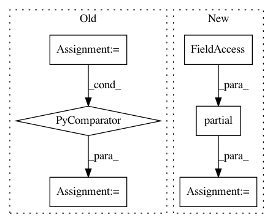

b7ca885dd1148a94c13e87789d5a5947eaedfc37,dask_image/ndmeasure/__init__.py,,histogram,#Any#Any#Any#Any#Any#Any#,141
Before Change
lbl_mtch = _utils._get_label_matches(labels, index)
index_ranges = [_pycompat.irange(e) for e in index.shape]
result = numpy.empty(index.shape, dtype=object)
for i in itertools.product(*index_ranges):
result[i] = _utils._histogram(
input[lbl_mtch[i]], min, max, bins
)
result = result[()]
return result
After Change
max = int(max)
bins = int(bins)
func = functools.partial(_utils._histogram, min=min, max=max, bins=bins)
result = labeled_comprehension(input, labels, index, func, object, None)
return result
In pattern: SUPERPATTERN
Frequency: 4
Non-data size: 6
Instances
Project Name: dask/dask-image
Commit Name: b7ca885dd1148a94c13e87789d5a5947eaedfc37
Time: 2018-09-30
Author: jakirkham@gmail.com
File Name: dask_image/ndmeasure/__init__.py
Class Name:
Method Name: histogram
Project Name: tensorflow/datasets
Commit Name: d2c47d5834c8484fda791c91db22cf22f2022c26
Time: 2019-04-12
Author: epot@google.com
File Name: tensorflow_datasets/core/dataset_utils.py
Class Name:
Method Name: build_dataset
Project Name: biocore/scikit-bio
Commit Name: 337a923ae44506dad5e142b75a78cfaf79f4f261
Time: 2016-04-19
Author: mcdonadt@colorado.edu
File Name: skbio/diversity/_driver.py
Class Name:
Method Name: beta_diversity
Project Name: Pinafore/qb
Commit Name: 75d90b82e1b25d88bc94add57964df2879d024ad
Time: 2017-05-24
Author: sjtufs@gmail.com
File Name: qanta/util/multiprocess.py
Class Name:
Method Name: _multiprocess